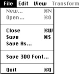

Figure 1: FontWriter File menu.
Table 1: Fontwriter File menu commands.
--------------------------------------------------------
Command |Description
--------------------------------------------------------
New |Displays the Font Selection window.
--------------------------------------------------------
Open |Brings up a Macintosh File Selection dialog
|for opening a font previously created with
|the 3DO FontWriter. Note: You can't open a
|font saved as a 3DO font.
--------------------------------------------------------
Close |Closes the current font-editing session and
|prompts you to save changes.
--------------------------------------------------------
Save |Saves a font in a 3DO FontWriterreadable
|format. You cannot display this format on
|the 3DO system.
--------------------------------------------------------
Save As |Prompts for a new filename and saves the
|font in a 3DO FontWriterreadable format.
|You cannot display this format on the 3DO
|system.
--------------------------------------------------------
Save 3DO |Saves the font in a format you can display
Font |on the 3DO system but cannot load back into
|the 3DO FontWriter. The filename extension
|is .3do.
--------------------------------------------------------
Quit |Quits the application. If you've made
|changes, you are prompted whether to save
|them or not.
--------------------------------------------------------